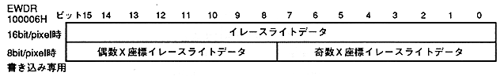

Return to previous page ｜ Return to menu ｜ Go to next page
-
4.4 Erase Light
- Sprite IC erases the contents of the frame buffer before drawing. This erase is called erase write, and specifies the fill area to be erased and the fill data to be written to that area. There are three registers related to erase write: the erase write data register, the erase write upper left coordinate register, and the erase write lower right coordinate register.
-
Erase write data register
- Erase write data register (EWDR, Erase write data register) defines fill data for erase write. This is a write-only 16-bit register at address 100006H. Be sure to set the fill data because the value is undefined after the power is turned on or reset.

- Erase write data: erase write data, bits 15-0
- When drawing a part in the frame buffer, VDP1 automatically deletes the frame buffer. During this erase (erase write), the 16-bit data set in the erase write data register is filled (filled) into the frame buffer.
* When the drawing to the frame buffer is 8bit / pixel (high resolution or rotation 8), it is erased by 2 pixels.
∙ Erase write area is set by the erase light upper left coordinate register and the erase light lower right coordinate register.
Return to previous page ｜ Return to menu ｜ Go to next page